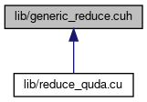

This graph shows which files directly or indirectly include this file:

Go to the source code of this file.
Functions | |
| template<typename ReduceType , typename Float , int writeX, int writeY, int writeZ, int writeW, int writeV, typename SpinorX , typename SpinorY , typename SpinorZ , typename SpinorW , typename SpinorV , typename Reducer > | |
| ReduceType | genericReduce (SpinorX &X, SpinorY &Y, SpinorZ &Z, SpinorW &W, SpinorV &V, Reducer r) |
| template<typename ReduceType , typename Float , typename zFloat , int nSpin, int nColor, QudaFieldOrder order, int writeX, int writeY, int writeZ, int writeW, int writeV, typename R > | |
| ReduceType | genericReduce (ColorSpinorField &x, ColorSpinorField &y, ColorSpinorField &z, ColorSpinorField &w, ColorSpinorField &v, R r) |
| template<typename ReduceType , typename Float , typename zFloat , int nSpin, QudaFieldOrder order, int writeX, int writeY, int writeZ, int writeW, int writeV, typename R > | |
| ReduceType | genericReduce (ColorSpinorField &x, ColorSpinorField &y, ColorSpinorField &z, ColorSpinorField &w, ColorSpinorField &v, R r) |
| template<typename ReduceType , typename Float , typename zFloat , QudaFieldOrder order, int writeX, int writeY, int writeZ, int writeW, int writeV, typename R > | |
| ReduceType | genericReduce (ColorSpinorField &x, ColorSpinorField &y, ColorSpinorField &z, ColorSpinorField &w, ColorSpinorField &v, R r) |
| template<typename doubleN , typename ReduceType , typename Float , typename zFloat , int writeX, int writeY, int writeZ, int writeW, int writeV, typename R > | |
| doubleN | genericReduce (ColorSpinorField &x, ColorSpinorField &y, ColorSpinorField &z, ColorSpinorField &w, ColorSpinorField &v, R r) |
Function Documentation
◆ genericReduce() [1/5]
template<typename ReduceType , typename Float , int writeX, int writeY, int writeZ, int writeW, int writeV, typename SpinorX , typename SpinorY , typename SpinorZ , typename SpinorW , typename SpinorV , typename Reducer >
| ReduceType genericReduce | ( | SpinorX & | X, |
| SpinorY & | Y, | ||
| SpinorZ & | Z, | ||
| SpinorW & | W, | ||
| SpinorV & | V, | ||
| Reducer | r | ||
| ) |
Generic reduce kernel with four loads and up to four stores.
Definition at line 6 of file generic_reduce.cuh.
References nColor, parity, R, quda::s, sum(), V, X, Z, and quda::blas::zero().
Referenced by genericReduce(), quda::blas::mixed_reduce(), and quda::blas::uni_reduce().
Here is the call graph for this function:

Here is the caller graph for this function:
◆ genericReduce() [2/5]
template<typename ReduceType , typename Float , typename zFloat , int nSpin, int nColor, QudaFieldOrder order, int writeX, int writeY, int writeZ, int writeW, int writeV, typename R >
| ReduceType genericReduce | ( | ColorSpinorField & | x, |
| ColorSpinorField & | y, | ||
| ColorSpinorField & | z, | ||
| ColorSpinorField & | w, | ||
| ColorSpinorField & | v, | ||
| R | r | ||
| ) |
◆ genericReduce() [3/5]
template<typename ReduceType , typename Float , typename zFloat , int nSpin, QudaFieldOrder order, int writeX, int writeY, int writeZ, int writeW, int writeV, typename R >
| ReduceType genericReduce | ( | ColorSpinorField & | x, |
| ColorSpinorField & | y, | ||
| ColorSpinorField & | z, | ||
| ColorSpinorField & | w, | ||
| ColorSpinorField & | v, | ||
| R | r | ||
| ) |
Definition at line 49 of file generic_reduce.cuh.
References errorQuda, R, and quda::blas::zero().
Here is the call graph for this function:

◆ genericReduce() [4/5]
template<typename ReduceType , typename Float , typename zFloat , QudaFieldOrder order, int writeX, int writeY, int writeZ, int writeW, int writeV, typename R >
| ReduceType genericReduce | ( | ColorSpinorField & | x, |
| ColorSpinorField & | y, | ||
| ColorSpinorField & | z, | ||
| ColorSpinorField & | w, | ||
| ColorSpinorField & | v, | ||
| R | r | ||
| ) |
Definition at line 95 of file generic_reduce.cuh.
References errorQuda, R, and quda::blas::zero().
Here is the call graph for this function:
◆ genericReduce() [5/5]
template<typename doubleN , typename ReduceType , typename Float , typename zFloat , int writeX, int writeY, int writeZ, int writeW, int writeV, typename R >
| doubleN genericReduce | ( | ColorSpinorField & | x, |
| ColorSpinorField & | y, | ||
| ColorSpinorField & | z, | ||
| ColorSpinorField & | w, | ||
| ColorSpinorField & | v, | ||
| R | r | ||
| ) |
Definition at line 119 of file generic_reduce.cuh.
References genericReduce(), QUDA_SPACE_SPIN_COLOR_FIELD_ORDER, R, warningQuda, and quda::blas::zero().
Here is the call graph for this function: